🎥 Explanatory Media
📖 What is Linux?
Linux is the backbone of the internet, powering millions of servers, supercomputers, and embedded devices. It is known for its stability, security, and the concept of "Distributions" (Distros) which package the kernel with different software.
🆚 Popular Distributions
| Distro | Base | Best For |
|---|---|---|
| Ubuntu | Debian | Beginners |
| Fedora | RPM | Developers |
| Arch Linux | Independent | Power Users |
| Debian | Independent | Servers |
🔗 Related Pages
🖼️ Visual Gallery
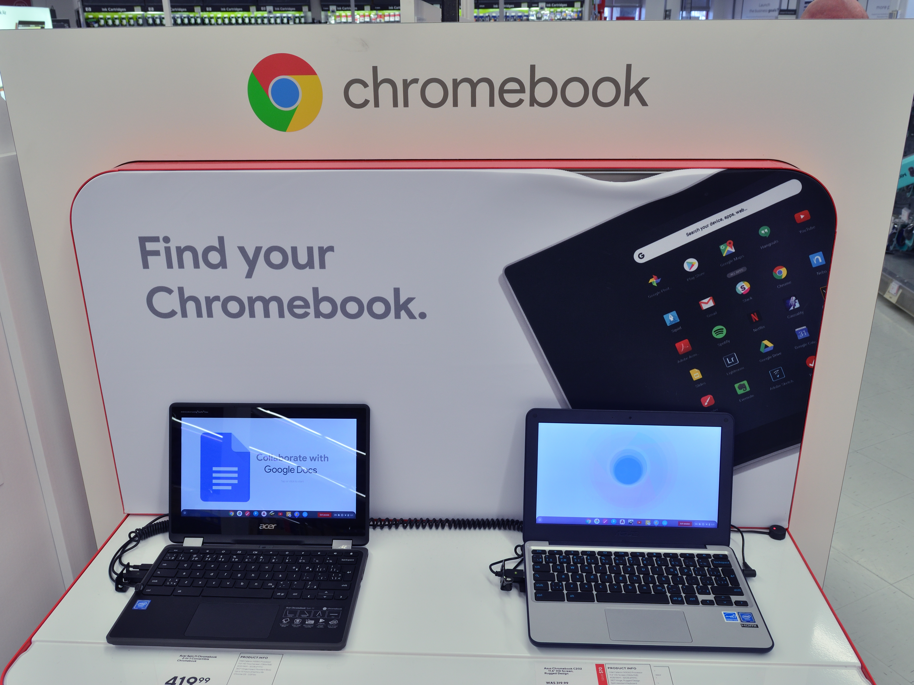

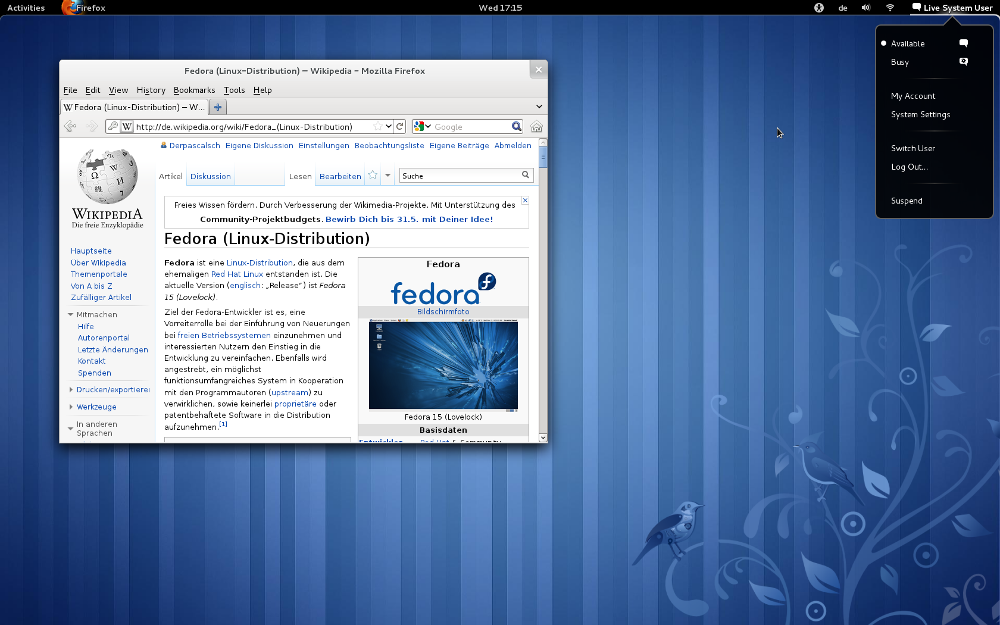
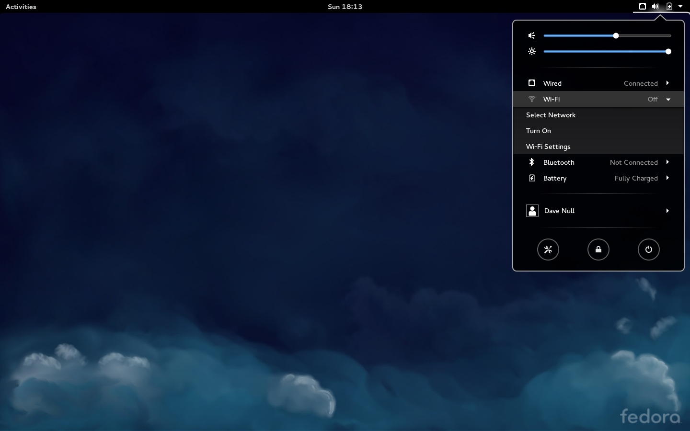
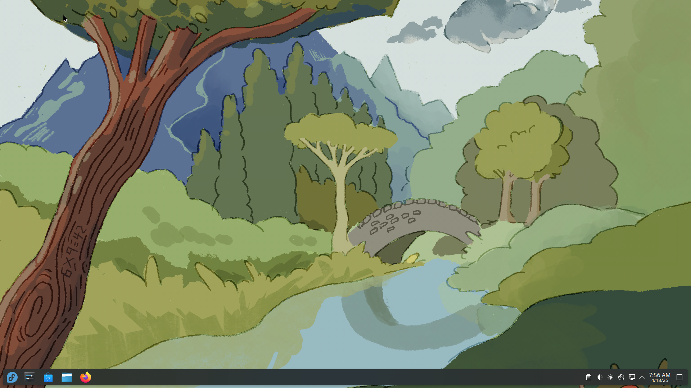
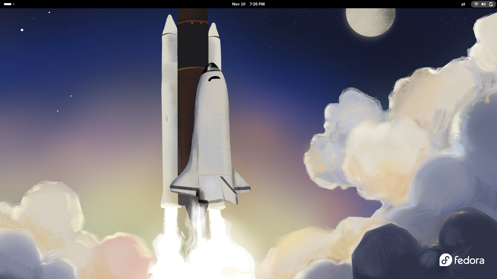
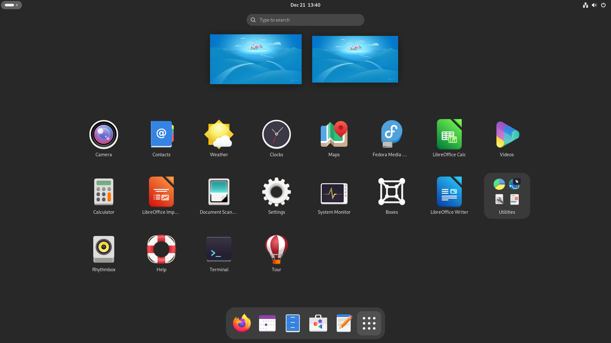
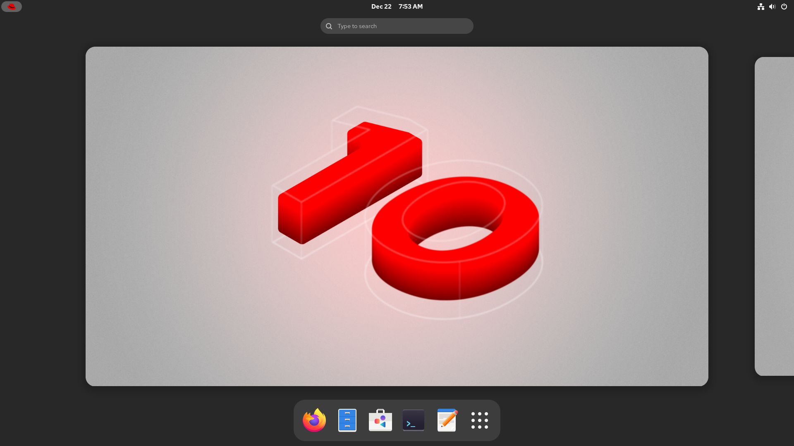
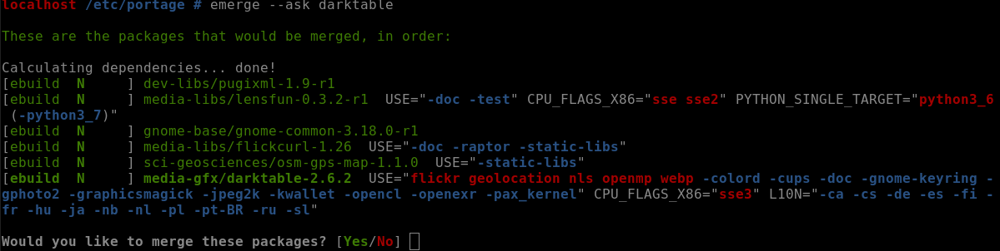
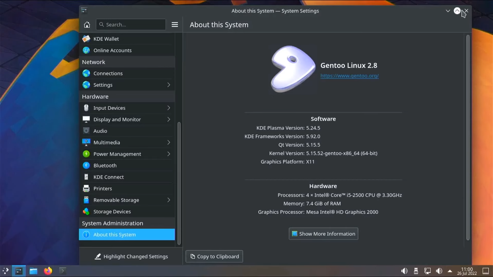
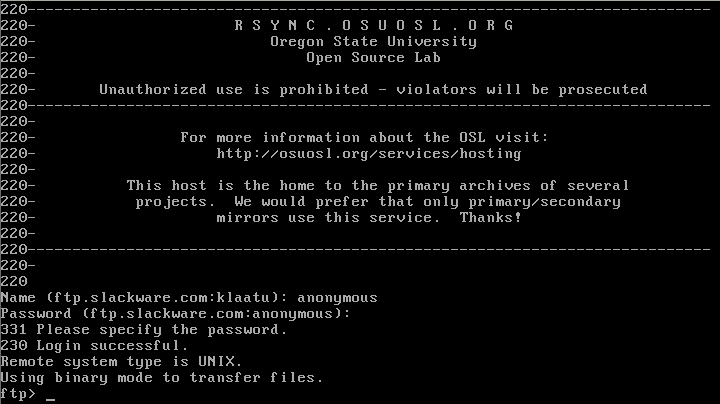
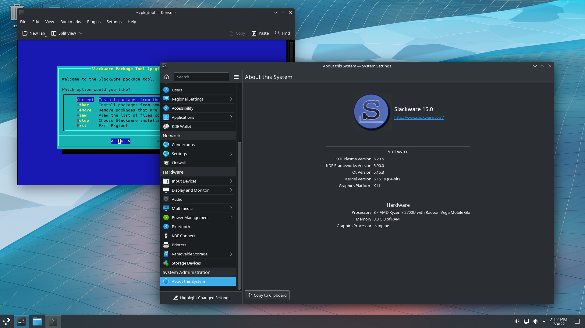


🔬 Deep Dive & Research Resources
To elevate your understanding of Linux to an academic and engineering level, explore the curated resources below. These materials cover the fundamental physics, architectural evolution, and advanced implementation details required for independent research.
📚 Academic & Technical Reading
🎥 Video Lecture / Demonstration
📜 History
Linus Torvalds released the first kernel in 1991. It combined with the GNU project tools to create a functional free OS. Today, it has thousands of variants catering to different needs.
🏗️ Architecture
Monolithic Kernel. Highly modular, allowing drivers to be loaded/unloaded at runtime. Everything is treated as a file. Uses the root user model for security.